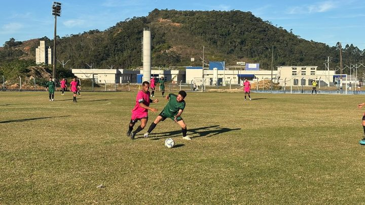
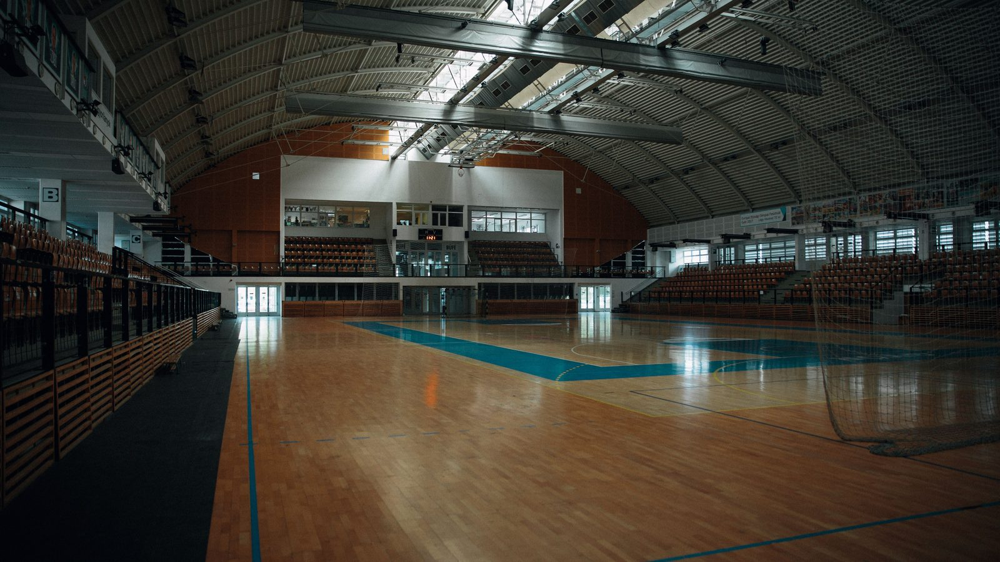
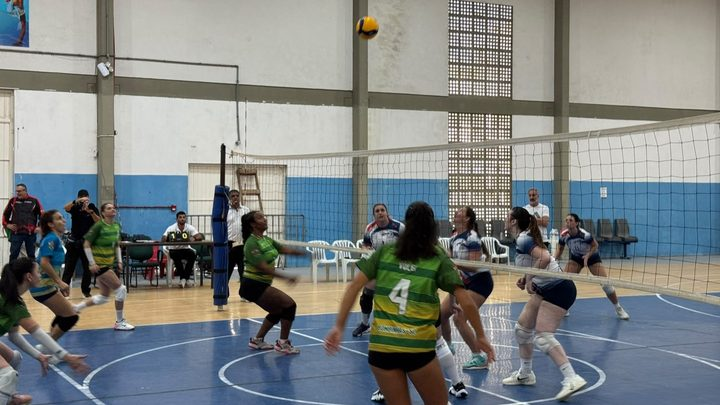

Itapema · EsporteCampeonato Itapemense de Futebol Amador começa domingo com oito times na Série A
Outra competição organizada pela Secretaria de Esportes.
O JEIzinho e o ParaJEI vão de 30 de setembro a 2 de outubro. O JEI, com 15 modalidades, começa em 19 de outubro e termina no dia 29.
Em 30 segundos · Modo de Leitura, formato original Santa Informa
A Secretaria de Esportes de Itapema fechou o calendário dos jogos escolares.
A definição saiu em reunião na quarta-feira, 2 de setembro.
Foi no auditório da Secretaria de Educação, com escolas públicas e particulares.
O JEIzinho vai de 30 de setembro a 2 de outubro.
É para estudante de 6 a 10 anos, nas categorias Pré-Mirim e Mirim.
Tem queimada, futsal e atletismo.
O ParaJEI 2026 acontece no mesmo período.
O JEI vai de 19 a 29 de outubro.
Divide as idades em 11 a 13 e 14 a 16 anos.
São 15 modalidades diferentes.
Em 2025 participaram mais de 3 mil atletas.
Eles vieram de 18 escolas do município.
Poder PúblicoPublicada em Redação Santa Informa

A Secretaria de Esportes de Itapema fechou o calendário dos jogos escolares de 2026. A definição saiu numa reunião na quarta-feira, 2 de setembro, no auditório da Secretaria de Educação, com representantes de escolas da rede pública e da rede particular. Participaram o secretário de Esportes, Paulinho Camargo, e o diretor de Competições, Fábio Figueiredo.
O JEIzinho abre a temporada. Vai de 30 de setembro a 2 de outubro e é para estudante de 6 a 10 anos, nas categorias Pré-Mirim e Mirim. São três disputas: queimada, futsal e atletismo. O ParaJEI 2026 acontece no mesmo período e entra na mesma programação, para ampliar a participação dos estudantes nas competições.
O JEI, que é a sigla de Jogos Escolares de Itapema, vem depois. Começa em 19 de outubro e termina no dia 29. Divide os atletas em duas faixas, de 11 a 13 anos e de 14 a 16 anos, e tem 15 modalidades diferentes.
Escola precisa de tempo. Tempo para montar equipe, avisar a família, resolver transporte e encaixar treino no horário de aula. Calendário que sai no começo de setembro para competição que começa no fim do mesmo mês dá margem para o professor de educação física se organizar. Foi esse o argumento do secretário na reunião.
"Essa reunião é importante para alinharmos tudo com as escolas e construirmos uma competição organizada, segura e que valorize nossos estudantes", disse Paulinho Camargo. Ele acrescentou que o esporte escolar tem papel na formação dos jovens e que a expectativa é que eles aproveitem cada momento dos jogos.
Em 2025, as competições escolares de Itapema reuniram mais de 3 mil atletas de 18 escolas. Não é evento de um dia só nem coisa de duas escolas grandes. A Prefeitura diz que a meta em 2026 é manter essa integração entre as redes e ampliar a participação dos estudantes.
Vale lembrar que o calendário escolar de Itapema já vinha movimentado neste ano. O município recebeu os Jogos Abertos em agosto e levou delegação ao Parajasc, em Chapecó. Agora a conta muda de lado: em vez de mandar atleta para fora, a cidade organiza a própria competição, dentro de casa, com as escolas daqui.
O resumo de 30 segundos está no topo e a versão completa é o texto acima. Aqui ficam as três leituras da casa sobre o mesmo assunto.
Clara, a otimista
Calendário fechado no começo de setembro para jogo que começa no fim do mês é presente para quem trabalha em escola. Professor de educação física passa o ano inteiro correndo atrás de data, e desta vez a data veio antes.
E tem o JEIzinho, para criança de 6 anos. Muita gente descobre que gosta de esporte exatamente nessa idade, numa quadra de escola, jogando queimada. Colocar o ParaJEI no mesmo período também ajuda: em vez de virar evento separado no fim do calendário, entra junto com todo mundo.
Seu Prudêncio, o criterioso
Merece atenção o que ainda não foi divulgado. A nota da Prefeitura traz as datas, mas não traz os locais nem a lista das 15 modalidades do JEI. Escola pequena precisa saber cedo se vai disputar handebol ou xadrez, porque isso define quem ela chama para treinar.
Vale acompanhar também o prazo de inscrição, que não aparece em lugar nenhum. Competição escolar costuma travar aí: a escola descobre a data, mas perde o prazo do formulário. Uma sugestão útil à Secretaria de Esportes é publicar o regulamento com prazo e local numa página fixa, para o professor consultar sem depender de grupo de mensagem.
Dito isso, o mérito do encontro é real. Sentar com rede pública e rede particular na mesma sala, quase dois meses antes da primeira prova, é planejamento de verdade. Muita cidade só avisa a escola em cima da hora.
Caco, o sarcástico
A queimada entrou no calendário oficial do município. Quem já levou bolada de queimada na escola sabe que aquilo sempre foi assunto sério, com regra própria e tudo.
Reclamar do quê? Marcaram data com antecedência, dividiram por idade e ainda avisaram as escolas. Está tudo certo demais para um calendário de esporte, fico até desconfiado.
Agora é torcer para o ginásio estar disponível na semana marcada. Isso, sim, é a modalidade mais disputada de qualquer cidade.
Fontes: Prefeitura de Itapema, publicada em 3 de setembro de 2026, com texto da Imprensa PMI, de onde saem a data da reunião (quarta-feira, 2 de setembro, no auditório da Secretaria de Educação), a presença de representantes das redes pública e particular, do secretário de Esportes Paulinho Camargo e do diretor de Competições Fábio Figueiredo, as datas do JEIzinho (30 de setembro a 2 de outubro, para 6 a 10 anos, com queimada, futsal e atletismo), do ParaJEI 2026 (mesmo período) e do JEI (19 a 29 de outubro, nas faixas de 11 a 13 e de 14 a 16 anos, com 15 modalidades), a fala do secretário e o número de mais de 3 mil atletas de 18 escolas em 2025. A imagem do topo é ilustrativa, de banco gratuito.

Itapema · EsporteOutra competição organizada pela Secretaria de Esportes.

Itapema · EsporteQuando a cidade sediou competição regional, em agosto.
 Itapema · Esporte
Itapema · EsporteO esporte paralímpico de Itapema fora de casa.